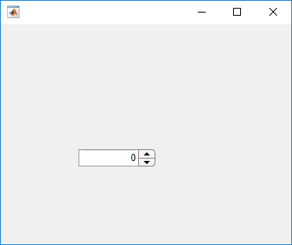
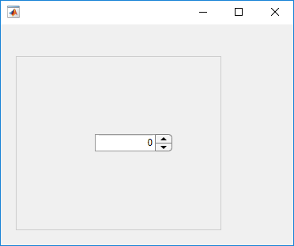

uispinner
Create spinner component
Description
spn = uispinnerSpinner object.
MATLAB® calls the uifigure function to create the
figure.
spn = uispinner(parent)Figure object or one of its child containers.
spn = uispinner(___,Name,Value)Spinner properties using one or more
Name,Value pair arguments. Use this option with any of the
input argument combinations in the previous syntaxes.
Examples
fig = uifigure; spn = uispinner(fig);

Create a spinner in a panel.
fig = uifigure; pnl = uipanel(fig); spn = uispinner(pnl);

Create a spinner that limits the values the app user can enter to between 0 and 100, inclusive.
Create a spinner.
fig = uifigure; spn = uispinner(fig);
Determine the limits. The returned values indicate that the lower and upper limits are unlimited.
limits = spn.Limits
limits = -Inf Inf
Set the limits to 0 and 100.
spn.Limits = [0 100];
Create a spinner that allows the app user to enter a value greater than -5 and less than or equal to 10.
fig = uifigure; spn = uispinner(fig,'Limits', [-5 10],... 'LowerLimitInclusive','off',... 'UpperLimitInclusive','on',... 'Value', 5);
Run the code. If you enter a value in the spinner that is outside the limits, MATLAB automatically displays a message indicating the problem. MATLAB then restores the value to the previous valid value.
Create a spinner that allows the app user to enter any value, but always displays the value using exactly two decimals. Be aware that MATLAB stores the exact value that the app user enters.
fig = uifigure; spn = uispinner(fig,'ValueDisplayFormat', '%.2f');
Run the code, and then enter 5.555 in the spinner. Click outside the spinner. The spinner displays 5.55.
MATLAB stores the original value, 5.555.
Click in the spinner, it displays the value originally typed.
Create a spinner and a slider. When an app user changes the spinner value, the slider updates to match that value.
Save the following code to spinnerValue.m on your
MATLAB path. This code creates a figure window containing a slider
and a spinner. When an app user changes the spinner value, the
ValueChangedFcn updates the spinner to reflect the
slider value.
function spinnervalue fig = uifigure('Position',[100 100 370 280]); sld = uislider(fig,... 'Position',[90 220 120 3]); spn = uispinner(fig,... 'Position',[100 140 100 22],... 'Limits',sld.Limits,... 'ValueChangedFcn',@(spn,event) updateSlider(spn,sld)); end % Create ValueChangedFcn callback function updateSlider(spn,sld) sld.Value = spn.Value; end
Run spinnerValue.
Click and hold the up arrow in the spinner until the value reaches 24, and then release. The slider thumb moves to indicate the spinner value.

Create a spinner and a slider. As an app user changes the spinner value, the slider repeatedly updates to match that value.
Save the following code to showChangingValue.m on your
MATLAB path. This code creates a figure window containing a slider
and a spinner. As an app user changes the spinner value, the
ValueChangingFcn repeatedly updates the slider to
reflect the spinner value as it changes.
function showChangingValue fig = uifigure('Position',[100 100 370 280]); sld = uislider(fig,... 'Position',[90 220 120 3]); spn = uispinner(fig,... 'Position',[100 140 100 22],... 'Limits',sld.Limits,... 'ValueChangingFcn',@(spn,event) spinnerChanging(event,sld)); end % Create ValueChangingFcn callback function spinnerChanging(event,sld) sld.Value = event.Value; end
Run showChangingValue.
Click, and hold the up arrow in the spinner until the value reaches 24, and then release. The slider moves as the spinner value changes.
Code the ValueChangedFcn callback to
determine if the value is rising or falling compared to the previous spinner
value. Set lamp color to green when the value is increasing and to red when the
value is decreasing
Save the following code to upOrDown.m on your
MATLAB path.
function upOrDown fig = uifigure(... 'Position',[100 100 190 170]); lmp = uilamp(fig,... 'Position',[90 50 20 20],... 'Color','green'); spn = uispinner(fig,... 'Position',[50 100 100 22],... 'ValueChangedFcn',@(spn,event) spinnerValueChanged(event,lmp)); end % Create ValueChangedFcn that uses event data function spinnerValueChanged(event,lmp) newValue = event.Value; previousValue = event.PreviousValue; difference = newValue-previousValue; if difference > 0 lmp.Color = 'green'; else lmp.Color = 'red'; end end
Run upOrDown.
Each time you change the spinner value, the
ValueChangedFcn determines whether the value is
increasing or decreasing and sets the lamp color accordingly.

Input Arguments
Name-Value Arguments
Specify optional pairs of arguments as
Name1=Value1,...,NameN=ValueN, where Name is
the argument name and Value is the corresponding value.
Name-value arguments must appear after other arguments, but the order of the
pairs does not matter.
Before R2021a, use commas to separate each name and value, and enclose
Name in quotes.
Example: 'Value',150 specifies that the number 50 appears in the
spinner.
The properties listed here are a subset of the available properties. For the full
list, see Spinner.
Value display format, specified as a character vector or string scalar.
MATLAB uses sprintf to display the value using the specified
format.
You can mix text with format operators. For example:
spin = uispinner('ValueDisplayFormat','%.0f MS/s');
The resulting spinner component looks like this:

When the app user clicks in the spinner field, the field shows the value without the text.

For a complete list of supported format operators, see sprintf.
Version History
Introduced in R2016a